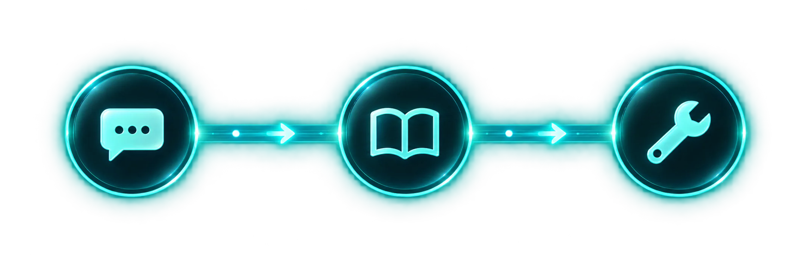
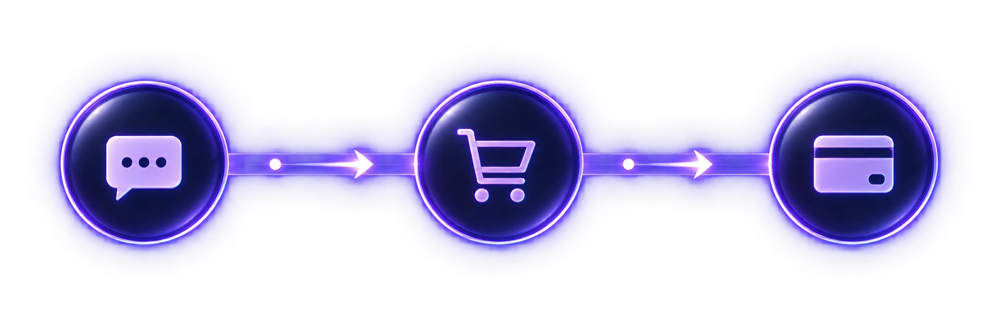
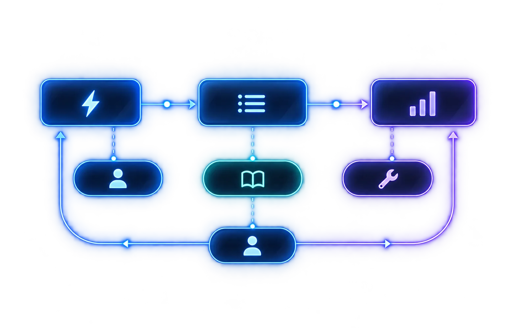

Sales
De una conversación a una oportunidad.
- Lead
- Propuesta
- Cliente
Open source · En desarrollo
Una plataforma abierta para construir flujos de negocio con IA. Ventas, soporte y comercio sobre un mismo motor.
Un proyecto en construcción. Construyámoslo juntos.
02 / Un motor, distintos objetivos
Conversaciones, agentes y herramientas que se adaptan a cada proceso.
De una conversación a una oportunidad.
De una consulta a una solución.

De una intención a una orden.

03 / Tu propio funnel
Define el disparador, las etapas y el agente. Imagina el flujo que tu negocio necesita.

Vista conceptual
Construido en abierto
Explora el código, comparte ideas y ayuda a dar forma a OpenFunnel.
Proyecto en desarrollo.